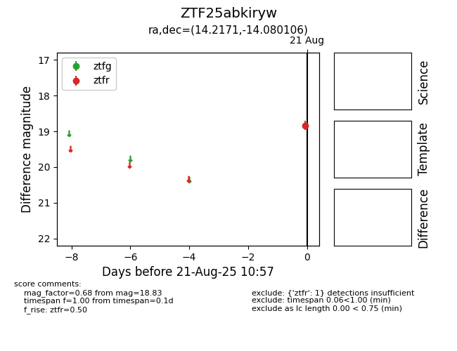

Target ZTF25abkiryw at 2025-08-21 10:57, see:
FINK: fink-portal.org/ZTF25abkiryw
Lasair: lasair-ztf.lsst.ac.uk/objects/ZTF25abkiryw
ALeRCE: alerce.online/object/ZTF25abkiryw
alt names
ZTF25abkiryw (ztf,alerce)
coordinates:
equatorial (ra, dec) = (14.2171,-14.08011)
galactic (l, b) = (128.7470,-76.89050)
photometry
last ztfr=18.83
1 ztfr detections
